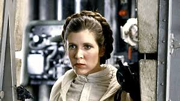
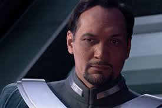
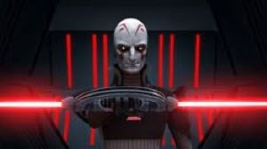
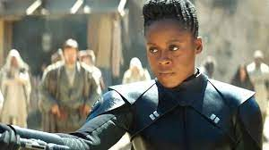

Leia Organa, née Skywalker, était une humaine sensible à la Force née près de dix-neuf
ans avant la Bataille de Yavin sur l'astéroïde Polis Massa. Elle était la fille du
Chevalier Jedi Anakin Skywalker et de la sénatrice Padmé Amidala. Elle avait un
frère jumeau : Luke Skywalker.
Celle que tous connaissaient alors comme la Princesse Leia d'Alderaan fut élue à
l'âge de dix-huit ans pour représenter son monde au Sénat Impérial. Elle suivit ainsi
la trace de son père adoptif et sans le savoir, celui de sa mère biologique ;
tout au moins avant la dissolution du Sénat Impérial ordonnée par l'Empereur Sheev Palpatine,
alias Dark Sidious, qui confia la gouvernance des secteurs galactiques aux gouverneurs
impériaux en mandat direct sous le gant de fer de l'Étoile de la Mort pour les maintenir
dans la peur.
|  | |
|---|---|
| planette: | • Alderaan |
| naissance | • 19 av.BY, poli massa |
| décès: | • 35 ap.BY ajan kloss |
| maitre: | • luke skylwalker |
| aprentis | • Rey Palpatine |
| armes: | • sabre laser • la force |
Bail Prestor Organa était un politicien humain qui fut le sénateur d'Alderaan pendant les dernières années de la République Galactique. Époux de la Reine Breha Organa, Bail Organa portait le titre de Vice-Roi et fit partie des fondateurs de l'Alliance Rebelle durant le règne de l'Empereur Sheev Palpatine et de l'Empire Galactique.
|  | |
|---|---|
| planette: | • Alderaan |
| naissance | • inconnu |
| décès: | • 0 av.BY Alderaan |
| position: | • sénateur • Vice-Roi • premier president • Rebelle |
| armes: | • Pistolet Blaster Kueget LN-21 |
Le Grand Inquisiteur, aussi simplement appelé l'Inquisiteur, était le chef des
Inquisiteurs de l'Inquisitorius sous l'Empire Galactique.
Du temps de la République Galactique il était un Garde du Temple Jedi, mais
lorsque l'Empire arriva il passa du côté obscur et rejoint l'Inquisitorius
pour participer à la Grande Purge Jedi. Quatorze ans après, il fut chargé par
Dark Vador d'éliminer les rebelles du Ghost sur Lothal. Pour cela il collabora
avec l'agent Kallus du Bureau de la Sécurité Impériale. Quatre ans avant la
bataille de Yavin il affronta le Jedi Kanan Jarrus et son apprenti Ezra Bridger,
dans un duel qui le mena à sa mort.
|  | |
|---|---|
| planette: | • utapau |
| naissance | • avant 47av.BY, utapau |
| décès: | • 4 av.BY, sovereigne |
| position: | • grand Inquisiteur |
| maitre: | • Dark sidious • Dark vador |
| armes: | • sabre laser rotatif a double lame • la Force |
La Troisième Sœur, aussi connue sous le nom de Reva, était une humaine sensible à la Force, qui servit l'Empire Galactique durant son règne en tant qu'Inquisitrice de l'Inquisitorius. Comme tous ses compères, Reva était une ancienne Jedi qui bascula du côté obscur de la Force et qui fut chargée de chasser les survivants à l'Ordre 66.
|  | |
|---|---|
| planette: | • inconnu |
| naissance | • inconnu |
| décès: | • inconnu |
| position: | • Jedi (encienement) • Inquisitrice |
| armes: | • sabre laser rotatif a double lame • la Force |